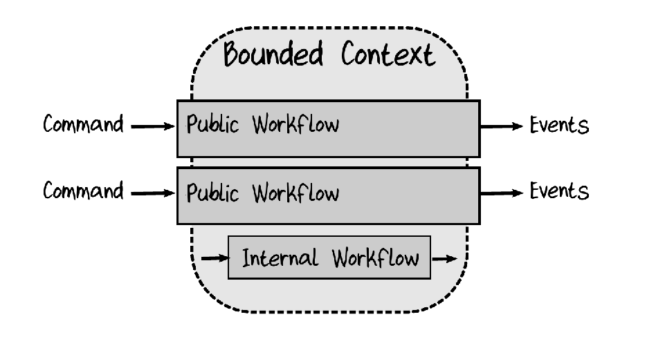
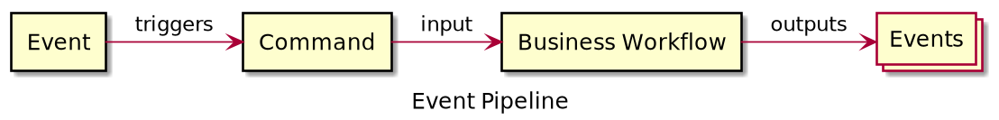
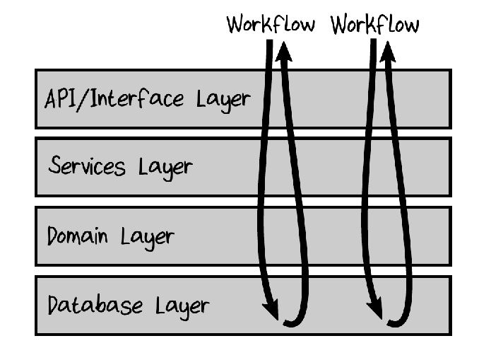
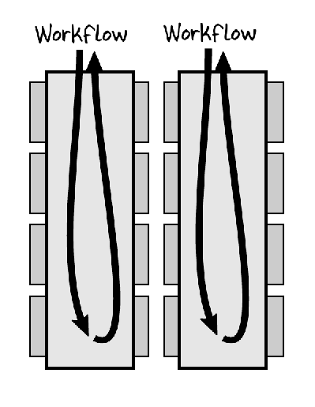
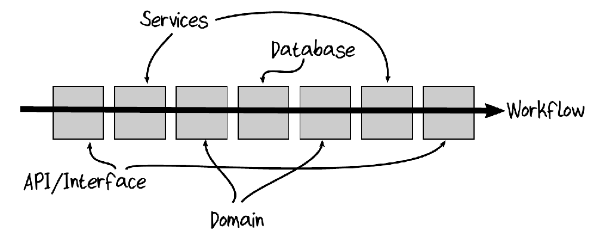
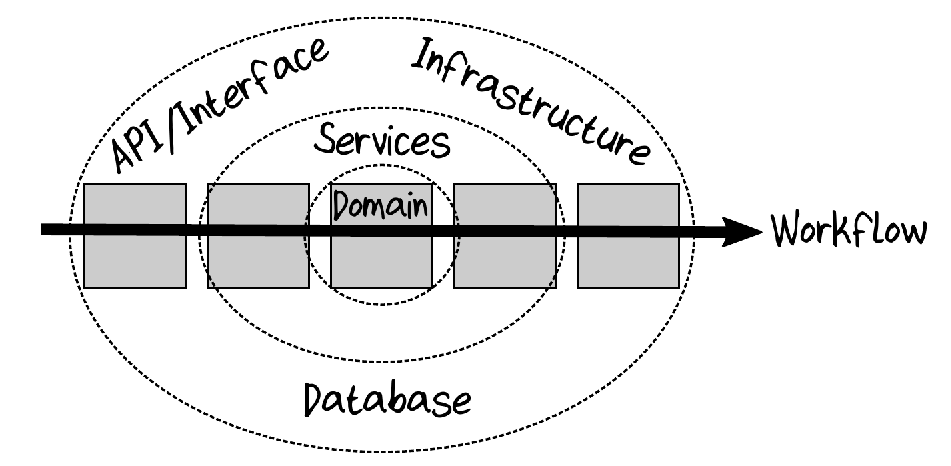
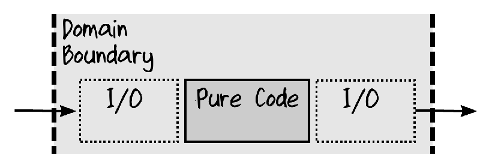

class: center, middle # Functional Domain Modelling --- # Agenda * Introduction * Theory * Techniques * Example * Coding Exercise * Demos and Discussion --- # Part One - Introduction --- class: center, middle # Bytecraft Oy [`hello@bytecraft.fi`](mailto:hello@bytecraft.fi) [`bytecraft.fi`](https://bytecraft.fi) --- class: center, middle Juha Heljoranta Partner and Software Craftsman at Bytecraft Oy --- # Part One - Introduction Rate from one to three (1. beginner, 2. junior, 3. senior) how experienced you are with a. Domain Driven Design<br/> b. Functional Programming Example: ``` a: 1, b: 2 ``` --- # Part Two - Theory * Domain Driven Design * Software Architectures * Functional Programming * Railway Oriented Programming * Transforming Programming --- ## Domain Driven Design  <br> <span style="font-size:0.5em;">Copyright 2018 Scott Wlaschin, Domain Modeling Made Functional.</span> * **Structure and language of software code should match the business domain.** * Bounded context: context within which a model applies * E.g Billing and Shipping are probably different contexts --- ### Domain Driven Design - Event pipelines  <br> Difference between Event and Command is that Event is an noncancelable fact and Command is something which can fail. Domain Events are written in the past tense. Commands are written in the imperative. Example: * Event: BeerOrdered * Command: OrderBeer * Event : BeerDelivered --- ## Object Oriented Architecture Layer Cake  <br> <span style="font-size:0.5em;">Copyright 2018 Scott Wlaschin, Domain Modeling Made Functional.</span> Use cases typically cut through layers. --- ## Architecture, Vertical Slices Can be improved by splitting flows into vertical slices.  <br> <span style="font-size:0.5em;">Copyright 2018 Scott Wlaschin, Domain Modeling Made Functional.</span> --- ## Architecture, Vertical Slices Still not good.  <br> <span style="font-size:0.5em;">Copyright 2018 Scott Wlaschin, Domain Modeling Made Functional.</span> --- ## Domain Centric Architectures ### Onion Architecture  <br> <span style="font-size:0.5em;">Copyright 2018 Scott Wlaschin, Domain Modeling Made Functional.</span> --- ## Domain Centric Architectures ### Clean Architecture <img src="./clean_architecture.jpg" alt="" width="60%" /> https://blog.cleancoder.com/uncle-bob/2012/08/13/the-clean-architecture.html --- ## Domain Centric Architectures Plus others such as hexagonal. --- ## Architecture, I/O Push I/O to edges.  <br> <span style="font-size:0.5em;">Copyright 2018 Scott Wlaschin, Domain Modeling Made Functional.</span> --- ## Functional Programming, 101 * Functions * Functions * Functions * Immutability * Algebraic Data Types (e.g. a type formed by combining other types) * Product types * Sum types * Avoid (observable) side effects (mutable state, exceptions, I/O, etc) --- ### Functional Programming, schools Very roughly two styles * Pure * Exceptionalists Pure prefer pure functional programming where no side effects are not allowed (use IO monad et al.). Exceptionalists (or pragmatists) consider exceptions to be exceptional and therefore OK. --- ## Railway Oriented Programming  --  --  https://fsharpforfunandprofit.com/posts/recipe-part2/ and https://fsharpforfunandprofit.com/posts/against-railway-oriented-programming/ --- ## Transforming Programming ```sh $ find . -type f | xargs wc -l | sort -n | tail -5 ``` ```javascript const double = (n) => n * 2; const increment = (n) => n + 1; // without pipeline operator double(increment(double(double(5)))); // 42 // with pipeline operator 5 |> double |> double |> increment |> double; // 42 ``` https://developer.mozilla.org/en-US/docs/Web/JavaScript/Reference/Operators/Pipeline_operator --- # Part Three - Techniques --- ## Techniques - Use types to describe domain, e.g. `UnvalidatedPayment` and `PaidInvoice` - Avoid primitive/generic types like: `Int`, `List` or `String` ```kotlin id: Int ``` vs ```kotlin id: UserId ``` - Add abstraction using types, functions, modules, packages, aliases, etc. --- ### OO vs. FP ```kotlin interface UserService { fun userExists(id: Int): Boolean } ``` vs. ```kotlin typealias UserExists = (Int) -> Boolean ``` Were to put/collect functions? The most important thing is to group them meaningfully. e.g. per (sub)domain or context. Different languages have different ways to group code e.g.: * modules * packages * objects * classes * etc. --- ## Techniques, Kotlin Example ```kotlin fun validateOrderId(id: Int): Boolean ``` vs. ```kotlin data class UnvalidatedOrderId(val id: Int) sealed class OrderId data class ValidOrderId(val id: Int): OrderId() data class InvalidOrderId(val id: Int): OrderId() typealias ValidateOrderId = (UnvalidatedOrderId) -> OrderId ``` --- ## Techniques, Scala Example ```scala def validateOrderId(id: Int): Boolean ``` vs. ```scala case class UnvalidatedOrderId(id: Int) sealed trait OrderId case class ValidOrderId(id: Int) extends OrderId case class InvalidOrderId(id: Int) extends OrderId type ValidateOrderId = UnvalidatedOrderId => OrderId ``` --- ## Techniques, TypeScript Example ```typescript function validateOrderId(id: number): boolean ``` vs. ```typescript type UnvalidatedOrderId = { readonly unvalidatedOrderId: number } type ValidOrderId = { readonly validOrderId: number } type InvalidOrderId = { readonly invalidOrderId: number } type OrderId = ValidOrderId | InvalidOrderId type ValidateOrderId = (unvalidatedOrderId : UnvalidatedOrderId) => OrderId ``` --- ## Techniques, F# Example ```fsharp let validateOrderId(id: int): bool ``` vs. ```fsharp type UnvalidatedOrderId = UnvalidatedOrderId of int type OrderId = | ValidOrderId of int | InvalidOrderId of int type ValidateOrderId = UnvalidatedOrderId -> OrderId ``` --- # Part Four - Example --- ## Example Case: User Borrows a Book *This is a **design** exercise to explore and refine domain model using types and abstractions.* *You should defer actual implementation as long as possible.* --- ## Case: user borrows a book, 1 Write minimal amount of code which might describe the use case ```kotlin data class User() data class Book() data class Borrow() typealias BorrowBook = (User, Book) -> Borrow ``` It doesn't even have to compile. *Note: this is not how DDD actually works but we just have to start somewhere.* --- ## Case: user borrows a book, 2 Work in small increments. Commit often. ```kotlin data class User(val id: Int) data class Book(val id: Int) data class Borrow(val user: User, val book: Book) typealias BorrowBook = (User, Book) -> Borrow ``` --- ## Case: user borrows a book, 3 Start figuring out different outcomes. ```kotlin data class User(val id: Int) data class Book(val id: Int) sealed class Borrow data class Borrowed(val user: User, val book: Book): Borrow() data class BookNotCurrentlyAvailable(val user: User, val book: Book): Borrow() typealias BorrowBook = (User, Book) -> Borrow ``` --- ## Case: user borrows a book, 4 All outcomes behind single `Borrow` type. ```kotlin data class User(val id: Int) data class Book(val id: Int) sealed class Borrow data class Borrowed(val user: User, val book: Book): Borrow() data class BookNotCurrentlyAvailable(val user: User, val book: Book): Borrow() data class BookNotFound(val book: Book): Borrow() data class UserNotFound(val user: User): Borrow() typealias BorrowBook = (User, Book) -> Borrow ``` --- ## Sidetrack Railway oriented programming. ```kotlin sealed class Result<out T, out E> data class Success<T, E>(val success: T) : Result<T, E>() data class Failure<T, E>(val error: E) : Result<T, E>() ``` --- ## Case: user borrows a book, 5 If we want keep `Success` and `Failure` cases separate ```kotlin data class User(val id: Int) data class Book(val id: Int) data class Borrowed(val user: User, val book: Book) sealed class BorrowFailure data class BookNotCurrentlyAvailable(val user: User, val book: Book): BorrowFailure() data class BookNotFound(val book: Book): BorrowFailure() data class UserNotFound(val user: User): BorrowFailure() typealias BorrowBook = (User, Book) -> Result<Borrowed, BorrowFailure> ``` --- ## Case: user borrows a book, 6 How do we get User and Book? ```kotlin data class UserId(val id: Int) data class BookId(val id: Int) sealed class Borrow data class Borrowed(val user: UserId, val book: BookId): Borrow() data class BookNotCurrentlyAvailable(val user: UserId, val book: BookId): Borrow() data class BookNotFound(val book: BookId): Borrow() data class UserNotFound(val user: UserId): Borrow() typealias FindUserById = (UserId) -> UserId? // ??? typealias UserExistsById = (UserId) -> Boolean // ??? typealias BorrowBook = (UserId, BookId) -> Borrow? ``` --- ## Case: user borrows a book, 7 Keep refining the domain using types. ```kotlin data class UnvalidatedUserId(val id: Int) data class UnvalidatedBookId(val id: Int) data class ValidUserId(val id: Int) data class ValidBookId(val id: Int) sealed class Borrow data class Borrowed(val user: ValidUserId, val book: ValidBookId): Borrow() data class BookNotCurrentlyAvailable(val user: ValidUserId, val book: ValidBookId): Borrow() data class BookNotFound(val book: UnvalidatedBookId): Borrow() data class UserNotFound(val user: UnvalidatedUserId): Borrow() typealias ValidateUserId = (UnvalidatedUserId) -> ValidUserId? typealias ValidateBookId = (UnvalidatedBookId) -> ValidBookId? typealias BorrowBook = (ValidateUserId) -> // dependency (ValidateBookId) -> // dependency (UnvalidatedUserId, UnvalidatedBookId) -> Borrow? ``` --- ## Case: user borrows a book, 8 Fix Event names and add Command. ```kotlin data class UnvalidatedUserId(val id: Int) data class UnvalidatedBookId(val id: Int) data class ValidUserId(val id: Int) data class ValidBookId(val id: Int) sealed class Borrowed data class BookBorrowed(val validUserId: ValidUserId, val validBookId: ValidBookId) : Borrowed() data class BookNotFound(val bookId: UnvalidatedBookId) : Borrowed() data class UserNotFound(val userId: UnvalidatedUserId) : Borrowed() data class BookNotCurrentlyAvailable(val validUserId: ValidUserId, val validBookId: ValidBookId) : Borrowed() data class BorrowBook(val unvalidatedBookId: UnvalidatedBookId, val unvalidatedUserId: UnvalidatedUserId) typealias ValidateUserId = (UnvalidatedUserId) -> ValidUserId? typealias ValidateBookId = (UnvalidatedBookId) -> ValidBookId? typealias BorrowBookFlow = (ValidateUserId) -> // dependency (ValidateBookId) -> // dependency (BorrowBook) -> Borrowed ``` --- ## Case: user borrows a book, 9 Solve how to mark book borrowed. Good enough. We're done 🎉 ```kotlin data class UnvalidatedUserId(val id: Int) data class UnvalidatedBookId(val id: Int) data class ValidUserId(val id: Int) data class ValidBookId(val id: Int) sealed class Borrowed data class BookBorrowed(val validUserId: ValidUserId, val validBookId: ValidBookId) : Borrowed() data class BookNotFound(val bookId: UnvalidatedBookId) : Borrowed() data class UserNotFound(val userId: UnvalidatedUserId) : Borrowed() data class BookNotCurrentlyAvailable(val validUserId: ValidUserId, val validBookId: ValidBookId) : Borrowed() data class BorrowBook(val unvalidatedBookId: UnvalidatedBookId, val unvalidatedUserId: UnvalidatedUserId) typealias ValidateUserId = (UnvalidatedUserId) -> ValidUserId? typealias ValidateBookId = (UnvalidatedBookId) -> ValidBookId? typealias MarkBookBorrowed = (ValidUserId, ValidBookId) -> BookBorrowed? typealias BorrowBookFlow = (ValidateUserId, ValidateBookId, MarkBookBorrowed) -> // dependencies (BorrowBook) -> Borrowed ``` --- ## Case: user borrows a book, 10 Implementation. ```kotlin typealias BorrowBookFlow = (ValidateUserId, ValidateBookId, MarkBookBorrowed) -> // dependencies (BorrowBook) -> Borrowed val borrowBookFlow: BorrowBookFlow = { validateUserId, validateBookId, markBookBorrowed -> { borrowBook -> val validUserId = validateUserId(borrowBook.unvalidatedUserId) val validBookId = validateBookId(borrowBook.unvalidatedBookId) when { validUserId == null -> UserNotFound(borrowBook.unvalidatedUserId) validBookId == null -> BookNotFound(borrowBook.unvalidatedBookId) else -> markBookBorrowed(validUserId, validBookId) ?: BookNotCurrentlyAvailable(validUserId, validBookId) } } } ``` --- # Part Five - Coding Exercises Some suggestions using public library as a playground: * Extend example case with book return * Add a book into library catalog * Validate book info (e.g. name, author, isbn) * User renews an item * Item can be renewed up to five times in a row. * Overdue item notification * Send notification * Include accumulated fine * Lost item handling * Mark item lost * Add fine * Send notification --- # Part Four - Demos and Discussion --- class: center, middle # Thank you!